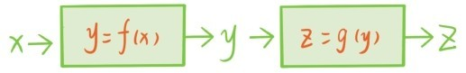
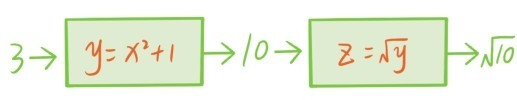
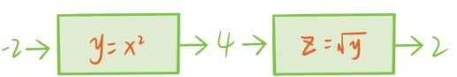
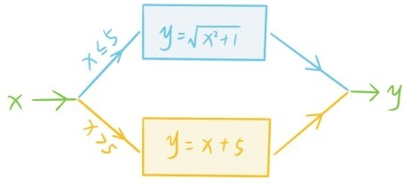
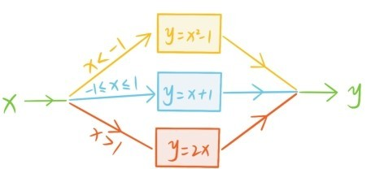

在已有函数的基础上还可以用各种办法构造新的函数。首先是函数的加减乘除运算，函数y=和函数y=x2+1相加就变成新的函数y=x2++1，相除又变成函数。
第二种构造方式是函数的复合。两个函数机器y=f(x)，z=g(y)串联后，会形成一个新的函数机器，称为复合函数，记作z=g(f(x))。

例如y=x2+1和z=的复合函数是z=。

绝对值函数||x就可以看成是y=x2和z=的复合函数。

综合利用复合构造和加减乘除运算，又可以产生许多新的函数，比如y=2x+，…
最后介绍分段函数，给定两个函数，比如y=和y=x+5，我们将相应的函数机器并联在一起，形成一个大的函数机器，当数字刚输入时，会有个分岔口，数字>5的话就往黄线方向输入，≤5的话就往蓝线方向输入。

例如将6输入时，就会往黄线方向输入，最终输出6+5=11。将2输入时，就会往蓝线方向输入，最终输出。将这个函数写成具体的表达式就是
这样的函数称为分段函数。最后还可以将3个或者更多个函数机器并联成一个更大的分段函数机器，例如

提问时间
3.9.1 请写下上图这个并联函数机器的具体表达式。
3.9.2 请将绝对值函数|x|写成分段函数的形式。
3.9.3 请判断哪些数输入到函数机器后，会发生“死机”？